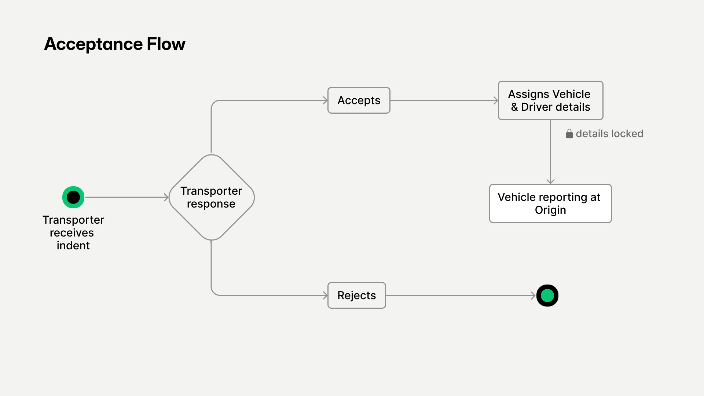

Simplifying the Indent Acceptance and Vehicle Assignment for Transporters

Context
The Transportation Management System (TMS) is a logistics solution used by enterprise logistics team and the transporter partners to plan and execute shipments. I led the 0 → 1 feature research and design and post-MVP redesign on the TMS platform for Enterprise logistics team and Transporter partners for indent acceptance and vehicle assignment. The solution reduced the dispatch delays and removed the support dependency for operational updates
Problem Statement
The challenge was to translate a real-world operational activity - confirming vehicle availability and preparing for shipment. The Enterprises could request multiple vehicles in single indent while the transporters might only have partial fleet availability. The system should support these operational realities without disrupting the shipment planning or dispatch timelines.
Objective
Design a clear and reliable workflow that allows transporters to respond to indents, allocate vehicles efficiently, and ensure the vehicles reach the origin sites for loading without operational delays.
Design Decisions
I evolved the flow into two-step layout that clearly separates the actions to be performed by transporters into acceptance / rejection of the indent and assigning the vehicles to accepted indents. I've designed these InterCustomCustomeractions carefully since this is the most critical point for users in the flow.

the action flow taken by the transporters
- To support operational realities, I introduced Partial Acceptance, allowing transporters to fulfil only if they have the vehicle availability
- For high-volume cases, I also added Bulk Upload option, enabling transporters to upload multiple assignments at once
a gif showcasing the acceptance flow of proposals for transporters


Post MVP Iteration with Redefined Solution
After launching the MVP to our early customers, my team and I started receiving frequent requests to modify driver and vehicle details such as updating driver names, mobile numbers, or vehicle registration numbers. To understand the issue better, i got on calls with our customers:
- Drivers could change at last moment
- SIM tracking consents sometimes failed leads to no vehicle tracking
- Different vehicles were substituted to loading area
- Instances of incorrect entries made by transporters
Additionally, the customers wanted Gate-in / Gate-out functionality on web to remove the dependency on mobile devices.
Refined Solution
To address the above key feedbacks, I redesigned the system with the following updates:
- Allowed vehicle details edits till Gate-Out event
- Extended Vehicle Gate-in / Gate-out functionality on web platform trip-wise
- Added VAHAN verification to validate truck documents
As part of this update, I also redesigned the Vehicle Details section on the enterprise side. It now provides access to vehicle documents and serves as a entry point to edit and manage vehicle information.
"vehicle details" tab - before vs after
Impact
The redesign produced measurable operational improvements:
Key Learnings
Logistics workflows are always dynamic and unpredictable.
The simplest designs hold a lot of complexity:
My job as a designer is to explore the complexity and bring simplicity to users. Elegant solutions require a lot of exploration and iteration.
Post-MVP feedback is a part of the design process:
Real users revealed edge cases that could not be predicted during planning. The redesign came from observing real usage, not assumptions.

still sailing! still learning!